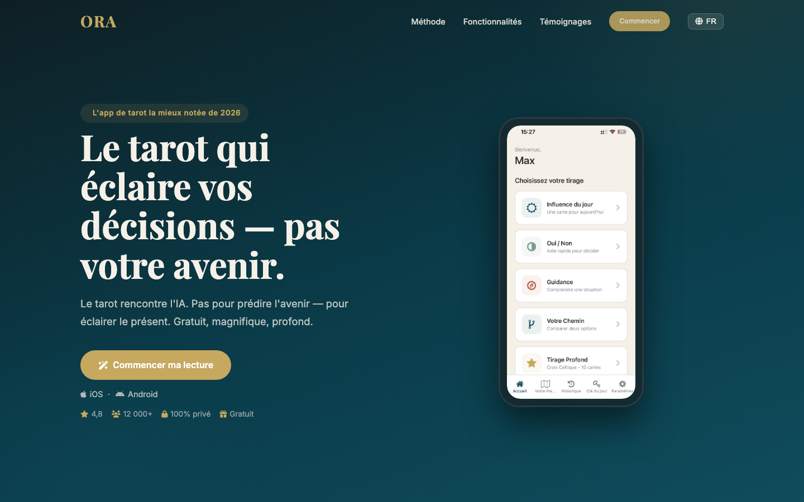

Nanabu is a language learning platform currently in active development. It teaches English through music — 180 songs structured as progressive lessons, from beginner to fluent expression.
Nanabu is a language-learning platform built around a simple insight: when you sing, you remember. Every song is structured as a lesson — vocabulary, grammar, pronunciation, and cultural context woven into the lyrics and melody. By the time you know the chorus, you have internalized the language.

Users sing along with scaffolded lyrics, getting real-time feedback on pronunciation, rhythm, and word recognition.
A curated progression from simple melodies to complex lyrical expression, mapped to Common European Framework levels.
Adaptive playlists that adjust to your pace, your favorite genres, and the vocabulary gaps you need to close.
Nanabu will operate on a freemium model. Pricing is still being finalized ahead of the 2026 commercial launch. Details will be announced upon release.
English (from French, Spanish, Portuguese, Japanese, and more). Additional source languages planned.
Email support. In-app feedback. Community forum planned at launch.
NuttyMe LLC will offer a 14-day money-back guarantee on all Nanabu subscription purchases. Details will be finalized at commercial launch. Free-tier usage carries no refund obligation.
Music activates overlapping neural pathways for language, memory, and emotion. Singing engages motor, auditory, and cognitive systems simultaneously, creating stronger and more durable memory traces than passive listening or rote repetition alone. Nanabu leverages this research to make language acquisition feel effortless.
Nanabu is built on modern cloud infrastructure with a focus on low-latency audio streaming, pitch and phoneme analysis, and data privacy. All user data is handled in accordance with our Privacy Policy and applicable U.S. regulations.
Nanabu is currently in active development. Core curriculum architecture and song content are in place. Application development is ongoing. Commercial launch is planned for 2026. The company is not yet generating revenue from this product.